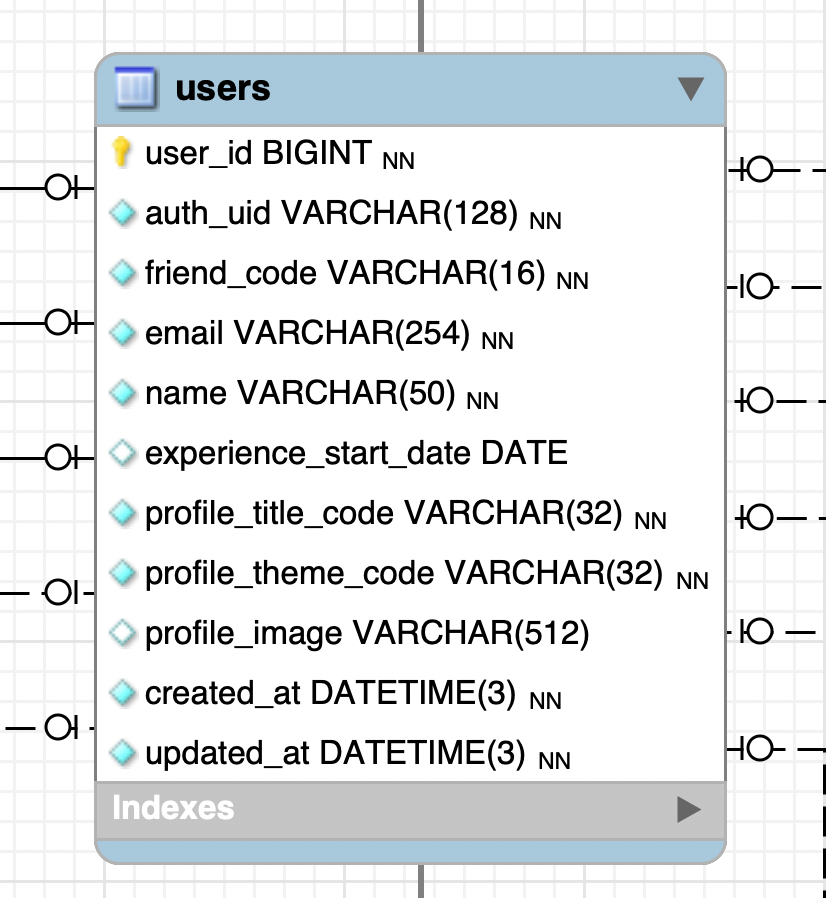
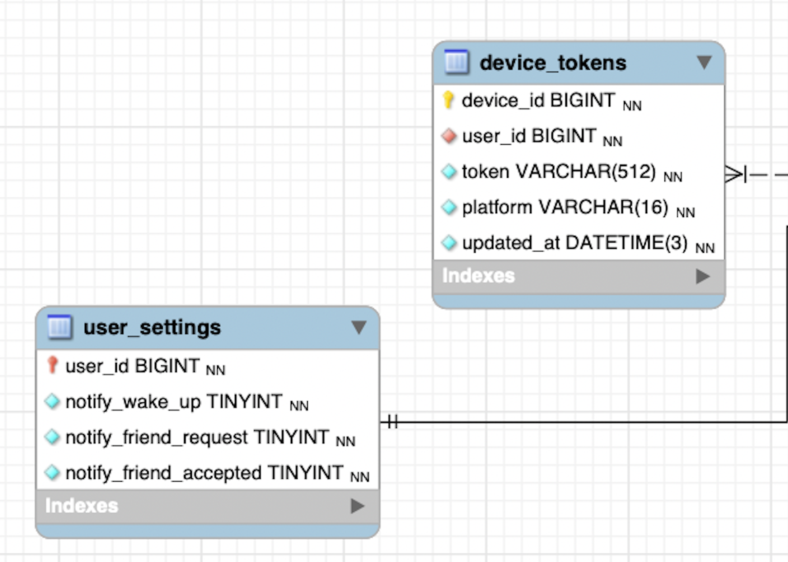
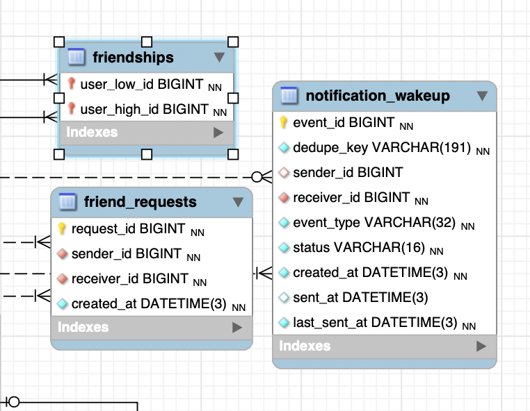
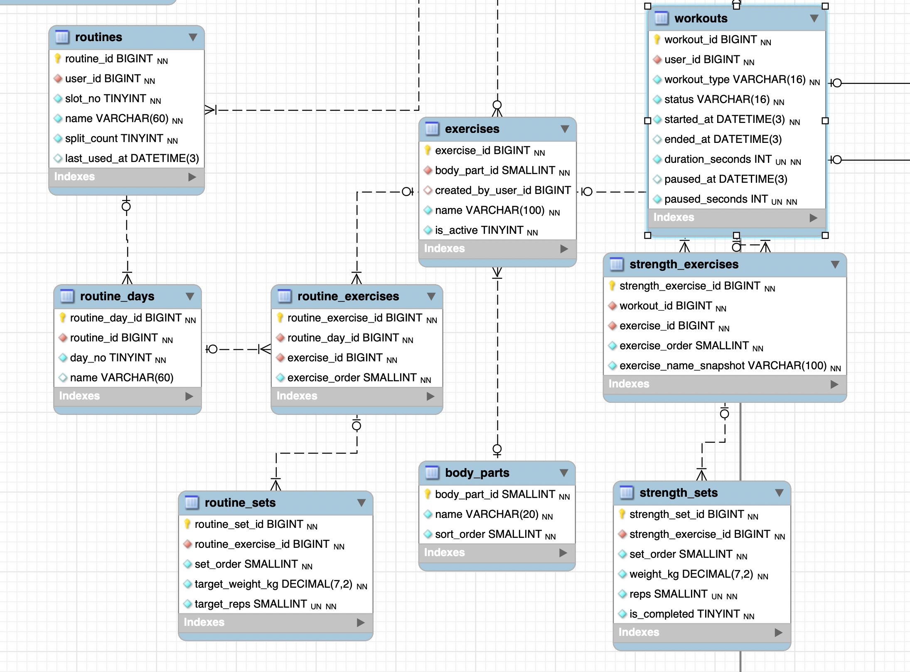
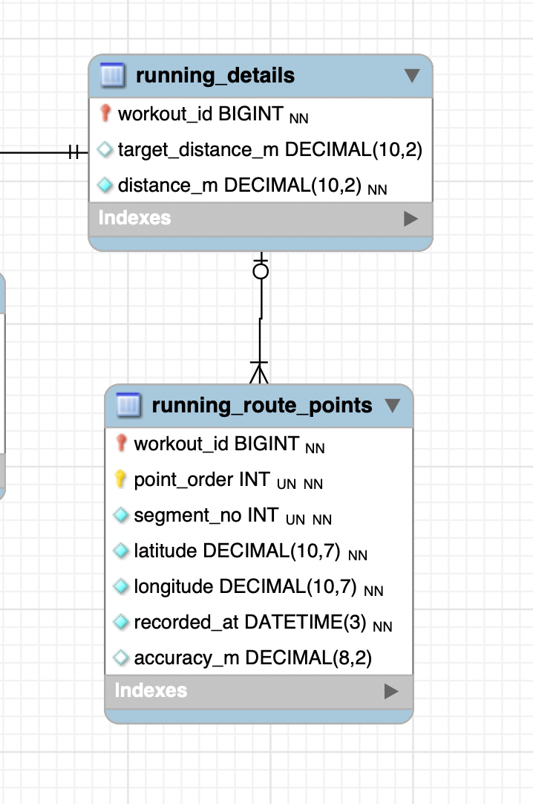
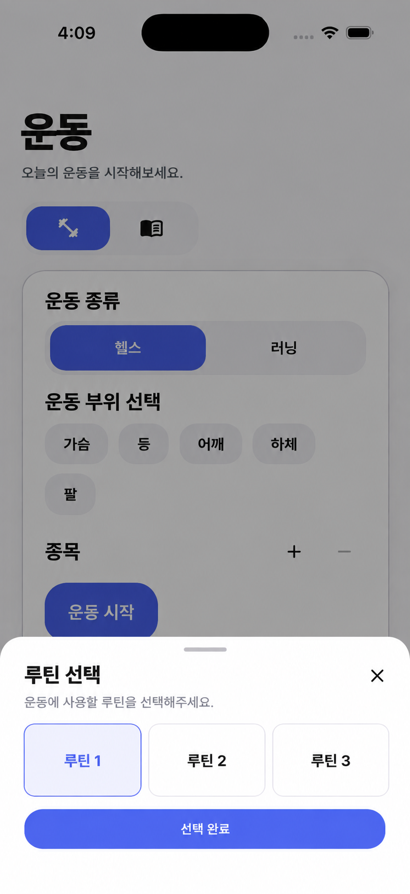

이번 주
지난주에 설계한 MySQL ERD를 기준으로 ShareFit의 주요 기능별 REST API와 데이터 처리 흐름을 정리함
REST API 기능 정의
사용자, 친구, 운동, 랭킹, 루틴 기능별로 필요한 API를 정리함
데이터 흐름 확인
각 기능에서 어떤 데이터를 조회·생성·수정·삭제하는지 확인함
기능 동작 과정 정리
운동 시작, 일시정지, 러닝 기록, 깨우기 알림의 실제 처리 순서를 정리함
ERD 보완
API 설계 중 확인된 컬럼과 테이블 구조를 다시 수정함
API 설계를 진행하면서 REST API와 FCM의 역할을 함께 확인함
API
앱과 서버가 서로 요청과 응답을 주고받을 수 있도록 연결해주는 통신 방식
REST API
앱과 서버가 HTTP를 통해 기능을 요청하고 데이터를 주고받는 방식
Firebase Cloud Messaging
깨우기, 친구 신청, 친구 수락 알림을 사용자 기기로 전달하기 위한 푸시 알림 기능
사용자 API
현재 사용자 조회, 회원가입, 프로필, 알림 설정, 기기 토큰과 관련된 API를 정리함


친구 API
친구 요청, 운동 상태 조회, 깨우기 알림, 친구 프로필과 루틴 조회 기능을 정리함
알림 관리 테이블 단순화
- 기존에 깨우기 알림 관리를 하던 두 테이블 중 notification_cooldowns 삭제
- 깨우기 알림만 관리하는 테이블명을 notification_events → notification_wakeup
- last_sent_at을 notification_wakeup에서 관리
- 같은 sender / receiver 기준으로 10분 쿨다운 확인
- 수락,거절 해결된 알림은 삭제라 status삭제
- 상대방이 수락하거나 거절한 시간도 필요 없어서 responded_at삭제

운동 / 헬스 API
운동 복구와 삭제, 헬스 운동 구성부터 시작·기록·완료·통계까지 정리함
일시정지 시간을 제외한 순 운동시간 계산
- 일시정지 시 paused_at 저장
- 재개 시 paused_seconds 누적
- 일시정지 상태에서 완료 시 마지막 정지시간도 누적

운동 / 러닝 API
러닝 시작, GPS 위치 기록, 일시정지·재개, 완료 기록과 러닝 코스 조회를 정리함
실시간 계산과 서버 기록 역할 분리
- GPS 위치는 앱에서 수집
- 앱에서 이전 좌표와 현재 좌표 사이 거리 계산
- 계산한 거리를 누적해 실시간 거리 표시
- 좌표와 최종 거리 기록은 서버에 저장
- 완료 후 코스와 기록은 저장된 데이터 조회

랭킹 / 루틴 API
친구 운동 비교와 루틴 생성·조회·수정·삭제·복사 기능을 정리함
루틴 원본과 실제 운동 기록 분리
- 루틴 선택 시 DB에서 조회만 수행
- 가져온 데이터는 앱 화면에 임시로 표시
- 시작 전 종목·세트 수정 가능
- 운동 시작 시 최종 화면 데이터를 strength_exercises / strength_sets로 생성

다음 주
이번 주에 정의한 API를 기준으로 Spring Boot 서버 내부 구조와 실제 구현 방식을 설계할 예정
Spring Boot 구조 설계
Controller, Service, Repository, DTO, Entity의 역할과 구조 정리